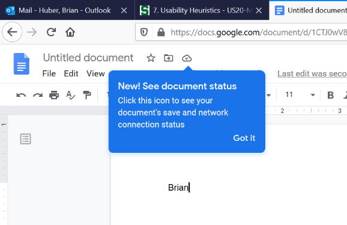
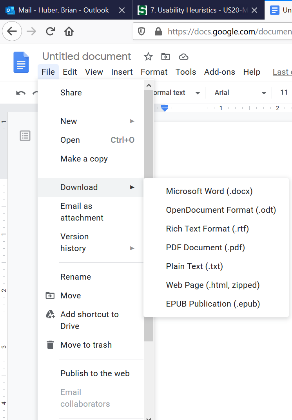
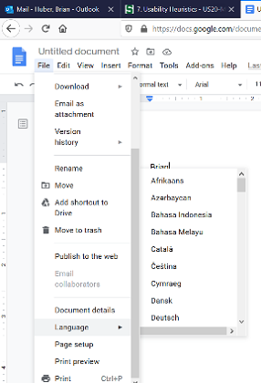
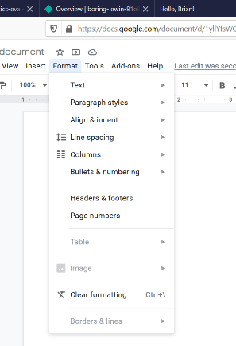

The system should always keep the users informed about what is going on, through appropriate feedback within a reasonable time. As depicted in the image above, Google Doc users are provided with a cloud icon that indicates the network status of their document. When changes are made to the document, the icon will say “saving…” to indicate it is saving the changes. When it is finished the icon will appear as depicted in the image above, which is a cloud icon with a checkmark in the center. Reassuring the user that their document is saved and won’t be lost when closing the application after use.



The system should speak the users’ language, with words, phrases and concepts familiar to the user for effective use. In the case of Google Doc, there are many features that allow the user to format or adjust a document to a real-world convention that they are familiar with. As depicted by the images above, the user can modify the file type, language of the text, and the overall structure or format of a body of text.